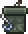
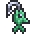

Мирное развлечение — Рыбалка
 Террария — это не только непрерывный геноцид монстров и умерщвление боссов, в ней есть мирные аспекты. Одним из таких аспектов является рыбалка. Что такое рыбалка? Рыбалка — это мирный способ получить хорошее снаряжение в начале игры, не бегая по опасным и тёмным шахтам в поисках руды, постоянно умирая в процессе. Ещё в самом начале игры, просматривая список крафтов из дерева на деревянном же верстаке, можно наткнуться на деревянную удочку. Это — первое рыбацкое орудие.
Террария — это не только непрерывный геноцид монстров и умерщвление боссов, в ней есть мирные аспекты. Одним из таких аспектов является рыбалка. Что такое рыбалка? Рыбалка — это мирный способ получить хорошее снаряжение в начале игры, не бегая по опасным и тёмным шахтам в поисках руды, постоянно умирая в процессе. Ещё в самом начале игры, просматривая список крафтов из дерева на деревянном же верстаке, можно наткнуться на деревянную удочку. Это — первое рыбацкое орудие.
Однако одной только удочки для рыбалки недостаточно, нужна ещё наживка. Наживку можно раздобыть, поймав её сачком, который можно купить у торговца. Основные виды наживки — это червь и светлячок. Светлячки в обилии появляются ночью, если вы постоите на одном месте некоторое время. Черви могут появляться во время дождя или при разбивании различных кучек камней, поросших мхом, которые можно встретить на поверхности повсеместно.
Конечно же, наживки и удочки для рыбалки будет недостаточно. Нужен водоём, в котором можно рыбачить. Чем больше водоём, тем эффективнее будет рыбалка, в слишком маленьких водоёмах рыбалка вообще невозможна. В качестве водоёма для рыбалки рекомендуется океан, помимо стандартного улова там можно выловить: рыбу-меч, которая может стать хорошим начальным оружием; акулу-кирку, которая является мощнейшей киркой дохардмода и рыбу-пилу, которой можно быстро пилить деревья и монстров.
Также в океане можно найти специального НИПа- рыбака. Он будет давать вам задания на поимку той или иной рыбы, а взамен на эту рыбу будет выдавать некоторое вознаграждение. И чем больше заданий будет выполнено, тем лучше будет награда.
Улов варьируется в зависимости от биома, в котором ведётся рыбалка. Например, глубоко в пещерах можно поймать зеркальную рыбу, в то время как на поверхности её просто нет.
Рыбача, можно выловить много полезных вещей — ящики, лягушачью лапку, воздушную рыбу-фугу, рыбу-зефир. Но, эти вещи являются весьма редким уловом. Для того, чтобы заполучить их потребуются усидчивость и упорство.
Открыв ящики, можно получить деньги, зелья, руду, слитки, аксессуары, оружие, питомца, маунта и другие игровые блага. Вообще, рыбалка во многом может заменить походы по пещерам, однако она никогда не сможет сделать этого полностью.
Небольшая хитрость
Постарайтесь порыбачить в океане т.к. там можно выловить Акулу-расхититель (кирка равная по мощности Адской кирке), Акулу-пилу,а также в ящиках: Соколиный меч, Ботинки парусника, Цунами в бутылке, Эглет, а также разнообразные зелья и руды. Однако ящики лучше открыть в хардмоде после разрушения алтарей.
Механика ловли в Terraria

Необходимые условия ловли
- Минимальный размер водоема — 75 блоков (50 для мёда), в случае слишком маленького водоема улова попросту не будет.
- Обязательно наличие наживки в инвентаре.
- Невозможно рыбачить, будучи частично или полностью погруженным в жидкость (даже будучи погруженным в не связный поверхностью водоём), но прицепившись крюком-кошкой под водой — возможно.
- Можно рыбачить на ездовом животном.
- Рыбачить в лаве возможно только с помощью раскалённой удочки.
- Улова не будет при ловле на трюфельного червя в любом биоме кроме океана (ловля в океане призовёт герцога Рыброна).
После соблюдения всех необходимых условий можно приступать к самой рыбалке. Для начала нужно закинуть удочку в водоём и дождаться движения поплавка (движение поплавка будет сопровождено характерным звуком), а после начала движения — сразу вытягивать удочку (ЛКМ). Но леска может порваться и улов сорвётся (это можно предотвратить, надев аксессуар высококачественная рыболовная леска высококачественная рыболовная леска). Иногда наживка тратится независимо от того, выловилась рыба или нет.
Шанс поимки рыбы зависи от:
- Мощности наживки
- Мощности удочки
- Размера водоёма
- Времени суток
- Фазы луны
- Наличие дождя
Шанс поимки квестовой рыбы зависит от:
-
Времени, прошедшего с момента взятия квеста:
- После взятого квеста у рыбака шанс поимки необходимой рыбы значительно возрастает, но повышенный шанс улова действует только на протяжении этого дня (квестовый день начинается и заканчивается в 4:30 и длится 24 игровых часа). Например, если квест взят в 19:00, то поймать необходимую рыбу с повышенным шансом возможно на протяжении 9,5 часов, до 4:30 следующего дня.
- По истечении квестового дня шанс улова необходимой рыбы значительно падает (всё равно что случайным образом выловить квестовую рыбу).
-
Выполнения всех необходимых условий для поимки:
- Необходимо находиться в правильном биоме, на нужной высоте, глубине и, возможно, соблюсти некоторые дополнительные условия (всё это описано, как правило, в тексте самого квеста; более подробную информацию для руководства можно найти в таблице улова).
Примечание
При несоблюдении всех необходимых условий поймать требуемую рыбу для активного квеста невозможно.
Факторы, влияющие на ловлю рыбы
В рыбалке есть ряд факторов, от которых зависит редкость улова. Все они объединены в один, в «навык рыбной ловли», который определяет шанс на получение более ценного улова. Чуть ниже вы увидите таблицу в которой указаны предметы, влияющие на навык рыбной ловли.
| Предмет | Эффект | Как создать/добыть | |
|---|---|---|---|
|  | Набор рыбака | +10 % к рыболовной силе | Создаётся из 3-х аксессуаров |
|  | Рыбацкая серьга | +10 к рыболовной силе | В качестве награды за задание рыбака. |
 |
Одежда рыбака | +5 к рыболовной силе (за каждую часть) | После выполнения 10-ого, 15-ого и 20-ого задания рыбака. |
 |
Зелье рыбалки | +15 к рыболовной силе (8мин) | Бутылка с водой + Воднолист + Хрустящий мед |
| Размер | Эффект |
|---|---|
| 75 | -75% |
| 100 | -66.6% |
| 125 | -58.3% |
| 150 | -50% |
| 175 | -41.6% |
| 200 | -33.3% |
| 225 | -25% |
| 250 | -16.6% |
| 275 | -8.3% |
| 300 + | 0.00% |
| Предмет | Эффект | Как создать/добыть | |
|---|---|---|---|
 |
Высокопрочная леска | Лесска никогда не оборвётся | В качестве награды за задание рыбака |
 |
Ящик для снастей | -5 % шанса потратить наживку. | В качестве награды за задание рыбака |
 |
Зелье ящика | +10 % к шансу выловить ящик (3мин) | Бутылка с водой + Янтарь + Смертеросль + Луносвет |
 |
Зелье сонара | Показывает зацепившийся предмет (4 мин.) | Бутылка с водой + Воднолист + Коралл |
 |
Карманный справочник рыбака | Отображает текущую рыболовную силу | В качестве награды за задание рыбака |
| Фактор | Эффект |
|---|---|
| Любая облачность | +10% |
| Дождь | +20% |
| 4:30am — 6:00am | +30% |
| 9:00am — 3:00pm | -20% |
| 6:00pm — 7:00pm | +30% |
| 9:00pm — 3:00am | -20% |
| Полнолуние | +10% |
| Фаза луны 2 или 8 | +5% |
| Фаза луны 4 или 6 | -5% |
| Новолуние (нет луны) | -10% |

Размером водоёма является суммарное количество блоков воды в определённых участках: расчёт ведётся сверху вниз от поверхности воды (если вертикальная полоса не доходит до поверхности — она не засчитывается). На картинке зелёным указаны подходящие части водоёма, а фиолетовым — часть, которая не учитывается игрой.
Примечание
Если какую-то определённую рыбу просит поймать рыбак, то шанс её поимки очень сильно возрастает по сравнению с другими квестовыми рыбами.
Наживка
У наживки, как и у кирки, молота и топора есть сила. Чем сильнее наживка, тем дороже рыба и ящики, и тем меньше вероятность выпадения мусора. Также, чем выше сила наживки, тем выше шанс, что она не будет использована, и вероятность этого не зависит от того, сорвалась добыча или нет. Сила наживки суммируется с другими факторами, влияющими на уровень навыка рыбалки.
|
|
Улов
Вы можете выловить различные виды рыб, от самых маленьких до редких, на поимку которых даёт задание рыбак. Почти из всех видов рыб можно сделать еду, дающую бафф Сытость, а некоторые рыбы являются ингредиентами, оружием или инструментом.
Также можно выловить ящики — деревянный, железный и золотой. Например, деревянный содержит якорь, действующий как гарпун, и слитки дохардмодного и хармодного режима. Железный ящик может содержать титановые слитки, аксессуары и приманку для питомца.
Иногда вы можете поймать мусор, такой как жестяная банка, водоросли или старый башмак. Мусор абсолютно бесполезен.
Водоём
В ловле рыбы играет роль водоём, в который вы закидываете крючок. В воде каждого биома можно выудить уникальную рыбу.
Водоёмы делятся на типы, высоту над уровнем моря и биом:
-
Типы:
- Вода — основной тип водоёмов, в воде вылавливаются почти все виды рыб.
- Мёд — такие водоёмы можно встретить лишь в ульях.
- Лава — в лаве можно рыбачить только раскалённой удочкой.
-
Высота:
- Космос — озёра на парящих островах, можно создать искусственно.
- Поверхность — обычные водоёмы и озёра на земле, также океан.
- Подземелье — земляной слой.
- Пещеры — каменный слой.
- Ад — лавовые озёра.
-
Биом:
- Океан
- Джунгли
- Снежный биом
- Святые земли
- Искажение
- Кримзон
- Грибной биом